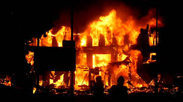

What you can report
Three categories, one desk
Crime
Crime & Public Safety
Burglary, assault, armed robbery — flag it the moment it happens so officers can respond while it still matters.
Road

Road Accidents
Kenya loses thousands of lives to road crashes every year. A fast report gets emergency crews on scene sooner.
Fire

Fire Outbreaks
From a kitchen fire to a bush blaze — early reporting is the difference between a scare and a disaster.